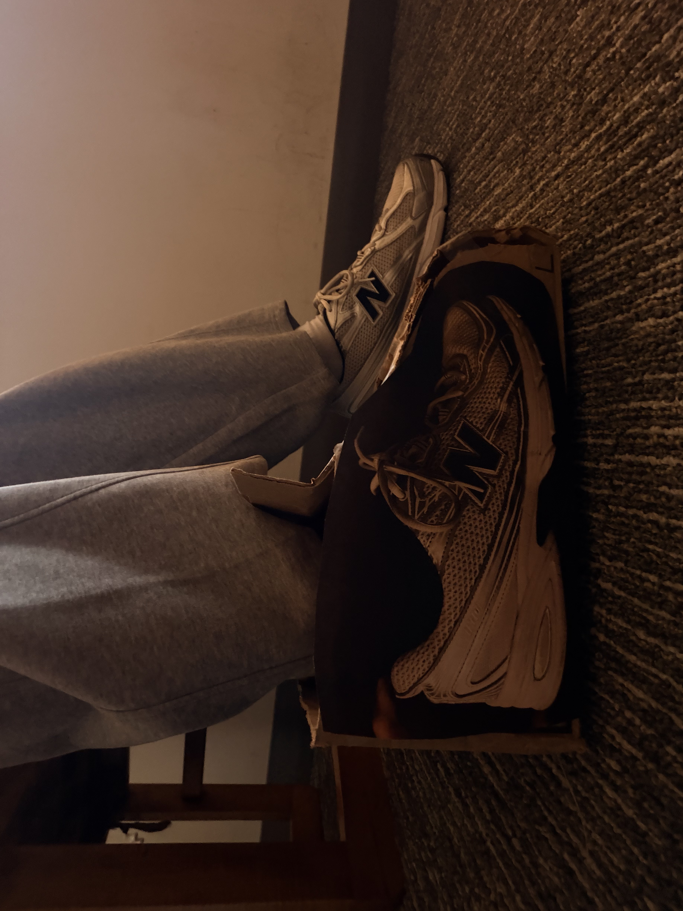
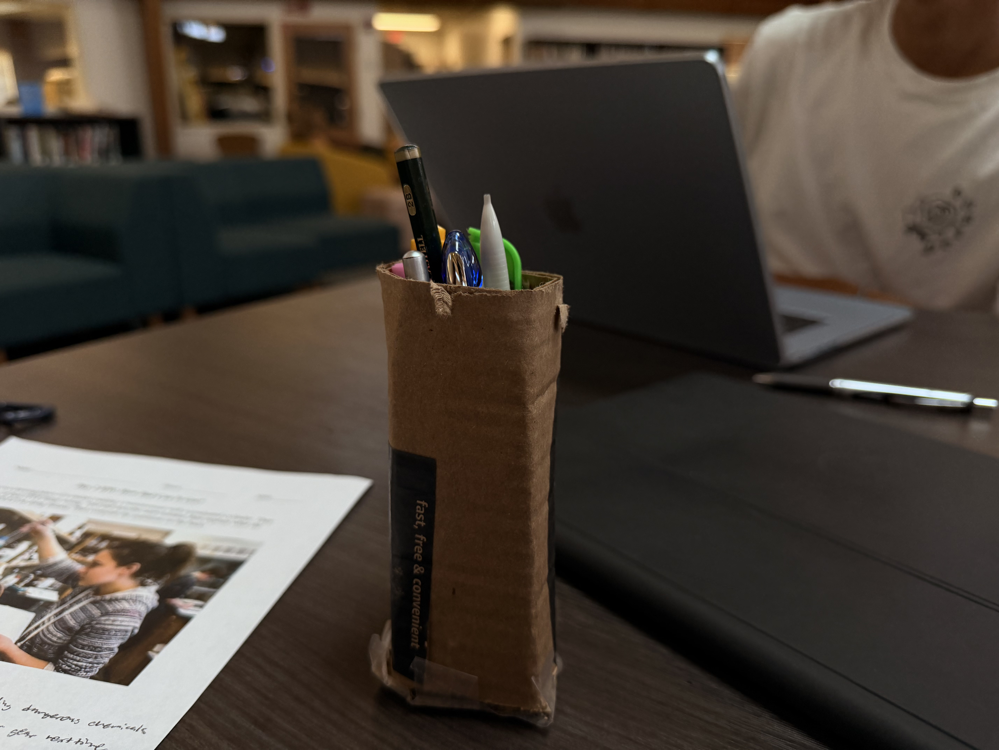
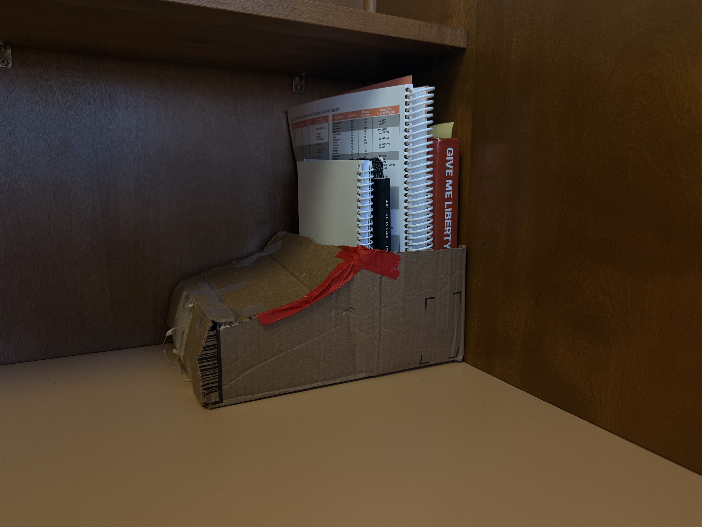
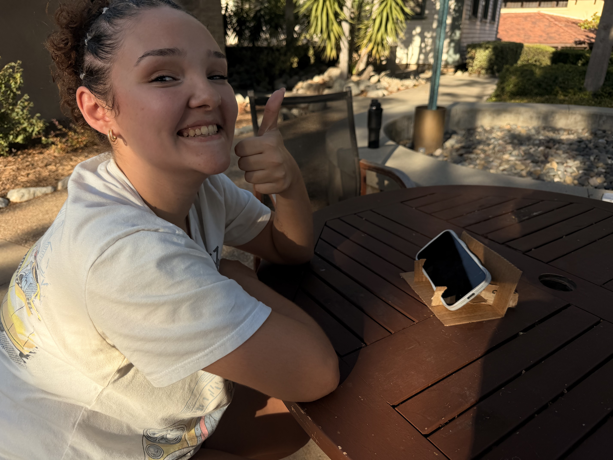

Cardboard Shoe
Problem: I lost a shoe during functional fitness.
Solution: I designed a shoe out of cardboard as a creative response to the problem.
What I learned: Everyday problems can inspire unusual design ideas, and prototypes help test those ideas.

Pencil Holder
Problem: Pencils were getting spilled and making a mess.
Solution: I created a holder to keep pencils together and organized.
What I learned: A simple design can make an everyday task easier and keep a workspace organized.

Book Holder
Problem: Books were cluttering up a desk and taking up space.
Solution: I designed a holder to keep books together and make the desk more organized.
What I learned: Thinking about how people use a space helps identify opportunities for useful designs.

Phone Stand
Problem: A phone can be difficult to prop up while using it hands-free.
Solution: I created a stand to hold a phone at a convenient viewing angle.
What I learned: Prototyping lets me explore practical solutions and see how well a design works.